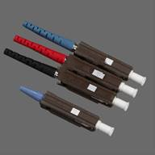
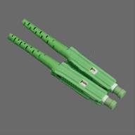

MU/PC,MU/APC Fiber connector
 
MU/UPC MU/APC
Low insertion loss ,high return loss
Apply for NTT & JIS standard
Resistance of tensile design
One-piece slim design
Comply for RoHS
Optical communication equipment
Telecom network
CATV network
Test equipment
Ethernet network
Item |
Single mode |
Multi mode |
Insertion loss |
PC ＜0.3dB APC ＜0.2dB |
PC＜0.3dB |
Return loss |
PC ＞45dB APC ＞60dB |
PC＞25dB |
Insert-pull test |
1000 times ＜0.3dB |
|
Operating temperature |
-40℃ ~ +75℃ |
|
Ceramic ferrule spec |
125.5um concentricity deviations:＜1um |
127um concentricity deviations:＜3um |
Suitable fiber |
PC/APC(9/125um) |
PC(50/125um,62.5/125um) |